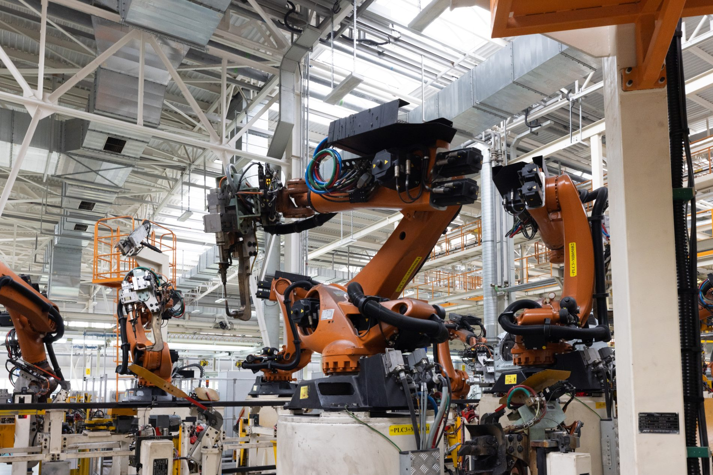

Revolusi Industri 3.0
Sumber: Understanding Industry 3.0 AY Institute
Revolusi Industri 3.0 terjadi pada akhir abad ke-20 dengan hadirnya internet dan teknologi digital, yang membuat dunia terasa semakin kecil karena jarak dan waktu dapat dipersingkat. Era ini ditandai dengan dua karakteristik utama, yaitu mesin yang mampu bergerak dan berpikir sendiri serta internet yang menghubungkan dunia secara instan. Selain itu, penemuan komputer oleh Alan Turing menjadi dasar bagi perkembangan pengolahan data dan lahirnya berbagai peralatan elektronik canggih.
Beberapa inovasi yang muncul dari Revolusi Industri 3.0 meliputi transistor, semikonduktor, integrated chip, peralatan elektronik, software, dan akses internet, yang semuanya berperan besar dalam mengubah cara manusia bekerja, berkomunikasi, dan berinteraksi di berbagai bidang kehidupan.
Sumber: Gramedia: Revolusi Industri
Tokoh Penting dalam Revolusi Industri 3.0
Sumber: Wikipedia: Alan Turing
Alan Turing
Pelopor komputasi modern yang mengembangkan konsep mesin Turing, dasar bagi komputer dan kecerdasan buatan.

Sumber: Wikipedia: Tim Berners-Lee
Tim Berners-Lee
Menciptakan World Wide Web (WWW), yang memungkinkan akses informasi global.

Sumber: Wikipedia: Steve Jobs
Steve Jobs
Pendiri Apple yang berperan dalam pengembangan komputer pribadi dan smartphone.
Sumber: Wikipedia: Bill Gates
Bill Gates
Pendiri Microsoft yang merevolusi perangkat lunak dengan Windows.
Sumber: Wikipedia: Robert Noyce
Robert Noyce
Salah satu pendiri Intel yang berperan dalam pengembangan mikroprosesor, mempercepat evolusi komputer modern.